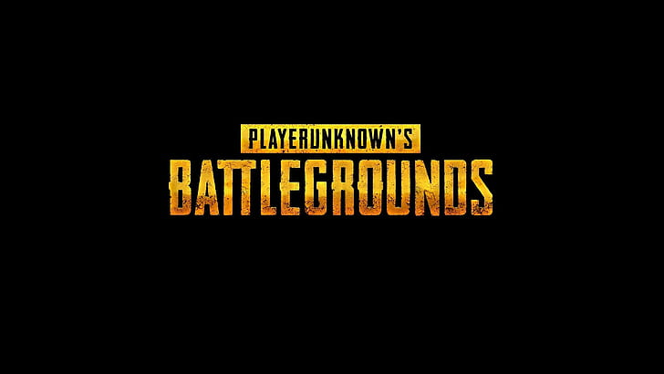

<html>
    <head>
        <meta charset="utf-8">
        <title>PUBG</title>
        <link href="style/style.css" rel="stylesheet" type="text/css">
        <link href="https://fonts.googleapis.com/css2?family=Roboto+Condensed:wght@300&display=swap" rel="stylesheet">
        </html>
        <body>
            <h1>PUBG  ШУТЕР ИГРА</h1>
            <P>B которой важна Тактика</P>
            
            <P>Советы, секреты, тактики и руководство по выживанию в PlayerUnknown's Battlegrounds</p>
            <p>Тактика</p>
                    <li>К юго-западу от района Северный вы можете найти стрельбище, на котором находится много различного оружия, такого как снайперские и штурмовые винтовки.</li>
                    
                    <li>Прибрежный город на западе, в котором, как и на военной базе Сосновка, вы сможете найти всё, что душе угодно</li>
                    <li>АКМ — самая лучшая штурмовая винтовка в игре, обладающая сильной отдачей и несильно эффективная на дальних дистанциях.</li>
            <button>кнопка</button>
                <script src="scripts/main.jsC:/Данил/styleC:/Данил/index.html"></script>
                </body>
 </html>